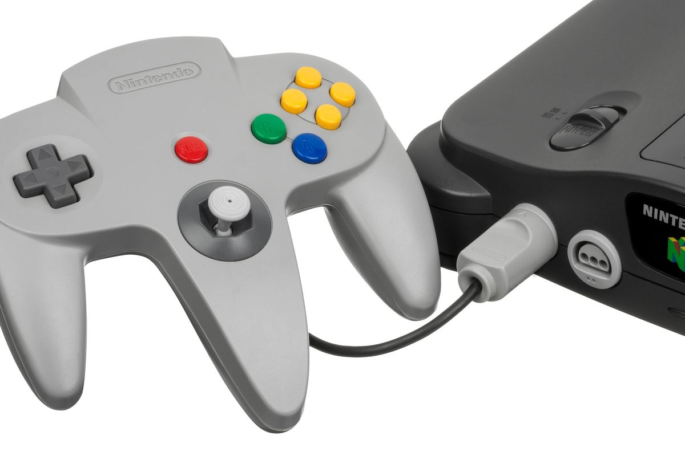
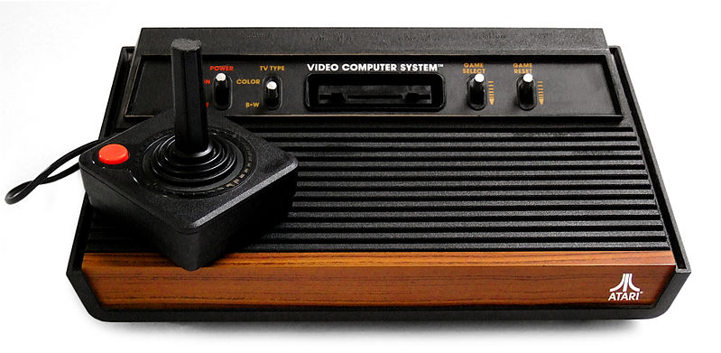

Video Game
Nintendo 64 | Atari | Odyssey | Playstation
Um videogame é um jogo eletrônico que envolve interação com uma interface de usuário ou dispositivo de entrada - como um joystick , controlador , teclado ou dispositivo de detecção de movimento - para gerar feedback visual para um jogador. Esse feedback é mostrado em um dispositivo de exibição de vídeo , como um aparelho de TV , monitor , tela sensível ao toque ou fone de ouvido de realidade virtual . Os videogames costumam ser complementados com feedback de áudio fornecido por meio de alto - falantes ou fones de ouvidoe, às vezes, com outros tipos de feedback, incluindo tecnologia háptica . Os videogames são definidos com base em sua plataforma , que inclui jogos de arcade , jogos de console e jogos de PC . Mais recentemente, a indústria se expandiu para jogos móveis por meio de smartphones e tablets , sistemas de realidade virtual e aumentada e jogos remotos na nuvem . Os videogames são classificados em uma ampla variedade de gêneros com base em seu tipo de jogabilidade e finalidade. Os primeiros videogames foram extensões simples de jogos eletrônicos usando saída semelhante a vídeo de computadores do tamanho de uma sala grande nas décadas de 1950 e 1960, enquanto os primeiros videogames disponíveis para os consumidores apareceram em 1971 com o lançamento do jogo de arcade Computer Space , seguido de no próximo ano pela Pong , e com o primeiro console doméstico, o Magnavox Odyssey, em 1972. Hoje, o desenvolvimento de videogames requer inúmeras habilidades para lançar um jogo no mercado, incluindo desenvolvedores , editores , distribuidores, varejistas, consoles e outros fabricantes terceirizados, e outras funções. Desde a década de 2010, a importância comercial da indústria de videogames vem aumentando. Os mercados asiáticos emergentes e os jogos para celulares em smartphones, em particular, estão impulsionando o crescimento da indústria. Em 2018, os videogames geraram vendas de US $ 134,9 bilhões anuais em todo o mundo, e foram o terceiro maior segmento no mercado de entretenimento dos Estados Unidos, atrás apenas da transmissão e da TV a cabo.
 


Os primeiros jogos usavam dispositivos eletrônicos interativos com vários formatos de exibição. O primeiro exemplo é de 1947 - um " Dispositivo de diversão de tubo de raios catódicos " foi registrado para patente em 25 de janeiro de 1947, por Thomas T. Goldsmith Jr. e Estle Ray Mann, e emitido em 14 de dezembro de 1948, como Patente dos EUA 2455992. Inspirado na tecnologia de exibição de radar , consistia em um dispositivo analógico que permitia ao usuário controlar um ponto desenhado em vetor na tela para simular um míssil sendo disparado contra alvos, que eram desenhos fixados na tela. Outros exemplos iniciais incluem: Christopher Strachey 's Rascunhos jogo, o Nimrod computador em 1951 Festival da Grã-Bretanha ; OXO um tic-tac-toe de jogos de computador por Alexander S. Douglas para o EDSAC em 1952; Tennis for Two , um jogo eletrônico interativo desenvolvido por William Higinbotham em 1958; e Spacewar! , Escrito por MIT estudantes Martin Graetz, Steve Russell, e Wayne Wiitanen de em um DEC PDP-1 computador em 1961. Cada jogo usado diferentes meios de display: NIMROD utilizado um painel de luzes para jogar o jogo de Nim , OXO usado um display gráfico para jogar jogo da velha Tênis para Doisusou um osciloscópio para exibir uma vista lateral de uma quadra de tênis, e Spacewar! usou o display vetorial do DEC PDP-1 para que duas naves espaciais lutassem uma contra a outra.
Essas invenções preliminares pavimentaram o caminho para as origens dos videogames hoje. Ralph H. Baer , enquanto trabalhava na Sanders Associates em 1966, teve a ideia de usar um sistema de controle para jogar uma partida rudimentar de tênis de mesa na tela da televisão. Com a aprovação de Sanders, Baer construiu o protótipo "Brown Box". Sanders patenteou as invenções de Baer e as licenciou para a Magnavox , que o comercializou como o primeiro console de videogame doméstico , o Magnavox Odyssey , lançado em 1972. Separadamente, Nolan Bushnell e Ted Dabney , inspirados por ver Spacewar! correndo emA Universidade de Stanford teve a ideia de criar uma versão semelhante rodando em um gabinete menor usando um computador menos caro com um recurso operado por moedas. Este foi lançado como o Computer Space , o primeiro jogo de arcade , em 1971. Bushnell e Dabney passou a formar Atari, Inc. , e com Allan Alcorn , criou o seu segundo jogo de arcade em 1972, o hit de ping pong de estilo Pong, que foi diretamente inspirado no jogo de tênis de mesa na Odyssey. Sanders e Magnavox processaram a Atari por violação de patente sobre as patentes de Baer, mas a Atari fez um acordo fora do tribunal, pagando pelos direitos perpétuos sobre as patentes. Após o acordo, a Atari prosseguiu com os planos de fazer uma versão doméstica de Pong , enquanto foi lançado no Natal de 1975. O sucesso do Odyssey e Pong , tanto como um jogo de arcade e máquina doméstica, lançou a indústria de videogames Baer e Bushnell receberam o título de "Pai dos videogames" por suas contribuições.
Nintendo 64
O console foi anunciado em 1993 com o codename "Project Reality", com plano de lançamento para arcades em 1994 e uma versão doméstica no ano seguinte. Em 1995, fora primeiro apresentado com o nome Nintendo Ultra 64, tendo o nome reduzido para Nintendo 64 em fevereiro de 1996 (5 meses antes do lançamento). Seu código de modelo é NUS-001 (cuja sigla significa Nintendo Ultra Sixty Four - o codinome do projeto). Considerada inovadora na época de seu lançamento, o console era dotado de um processador gráfico projetado pela Silicon Graphics. A Nintendo 64 também contava com um processador de áudio que permitia o uso teórico de até 100 canais de áudio PCM (o que por motivos práticos nunca foi utilizado, já consumiria todos os recursos da CPU).
Foi lançado um total de 388 jogos para o console, alguns exclusivamente no Japão ou Europa. Embora os consoles concorrentes PlayStation e Sega Saturn tenham recebido mais jogos (cerca de 1.100 e 600 jogos, respectivamente), assim como os consoles anteriores da própria Nintendo (SNES com cerca de 725; NES com cerca de 768), o Nintendo 64 possui um grande número de jogos aclamados pela crítica e com muitas vendas. Super Mario 64 foi o jogo mais vendido da geração, com cerca de 11 milhões de cópias vendidas, ficando acima de Final Fantasy VII (9.72 milhões) e Gran Turismo (10.85 milhões), ambos de PlayStation. Super Mario 64 foi amplamente elogiado pela crítica e estabeleceu o padrão para os novos jogos de plataforma em 3D. GoldenEye 007 foi importante na evolução dos jogos de tiro em primeira pessoa, e é considerado um dos melhores jogos do gênero. The Legend of Zelda: Ocarina of Time estabeleceu o padrão para os futuros jogos de ação/aventura em 3D e é amplamente considerado um dos maiores jogos de todos os tempos. O último jogo de Nintendo 64 lançado oficialmente no Brasil pela Gradiente foi Tony Hawk's Pro Skater 2 (2001); no Japão, foi Bomberman 64 (2001; não confundir com o jogo de mesmo nome de 1997); nos EUA, foi Tony Hawk's Pro Skater 3 (2002); e, na Europa, Mario Party 3 (2001).
Atari
A Atari foi fundada por Nolan Bushnell e Ted Dabney em 1972 e seu primeiro jogo foi o arcade Pong. Em 1975 a empresa lançou uma versão caseira do jogo. Durante a década de 1970, a Atari se destacou ao produzir dezenas de jogos para arcade. Tempo depois, Nolan Bushnell vendeu a empresa para a Warner, que tinha feito uma oferta irrecusável. Com o passar do tempo, houve um certo "choque" entre a nova direção e Nolan Bushnell por causa do modo diferente dele administrar a empresa, e também irritando os magnatas que tinham comprado a companhia. Isso culminou com Nolan sendo despedido. O primeiro console foi o Atari VCS (Video Computer System), produzido em 1977. Seu preço era alto demais (em torno de 200 dólares), e uma sucessão de novos consoles foi lançado para tentar estabelecer uma fonte de renda segura, até que, em 1978, lançou o Atari 2600, de longe seu maior sucesso (e posteriormente o ícone da empresa).
Novos consoles com mais recursos foram lançados posteriormente (como o Atari 5200, o portátil Lynx, e o mais recente Jaguar), mas nenhum chegou perto das marcas de venda alcançadas pelo 2600 durante os anos 80. Havia centenas de empresas produzindo jogos (que chegavam aos milhares de títulos) para o 2600, entre elas a SEGA, a Coleco, e a Nintendo. As vendas começaram a cair nos Estados Unidos entre 1983 e 1984. No Brasil foi lançado em 1983 pela Gradiente e continuou como o vídeo game mais popular até o final da década, quando a SEGA entrou no mercado com o Master System. Ainda assim, é possível encontrar até hoje programadores e pequenas empresas produzindo novos jogos compatíveis com esse console. O insucesso frente às grandes marcas surgidas a partir da "terceira geração" de video games de 8 bits causou problemas financeiros na Atari. No início dos anos 90, a companhia investiu no portátil Lynx, que não teve a mesma aceitação que o concorrente Game Boy, da Nintendo. Em 1993 lançou, em parceria com a IBM, o Jaguar, console de 64 bits, e o mais avançado de seu tempo. Mas a carência de jogos e o alto preço do aparelho fez com que as vendas nunca decolassem, sendo mais tarde eclipsado pela Nintendo com o Nintendo 64, bem como pela Sony, com o seu primeiro console, o PlayStation. Ao longo dos anos 1990, a inabilidade da Atari em acompanhar o mercado de consoles culminou com a venda de suas divisões para diversas empresas de informática, terminando com a venda da própria marca para a Infogrames em 2001. Desde então, esta empresa usa o nome e o logotipo original da Atari em seus produtos, e assim produziu jogos de sucesso, como a série Civilization.
Odyssey
O console foi criado em 1978 pela empresa Magnavox / Philips (estas empresas uniram-se em 1974 sob a liderança da Philips) como evolução do console da Magnavox anterior, o Magnavox Odyssey, o primeiro console de vídeo games doméstico de sempre. A consola foi lançada em Julho de 1978 nos Estados Unidos pela Magnavox com o nome Odyssey. A consola foi lançada em Dezembro de 1978 pela Philips em vários países europeus com o nome "Videopac G7000", incluindo Portugal. Na França foi usado o nome C52 e a distribuição só ocorreu em 1979. No Japão a consola foi lançada em 1982 com o nome Odyssey² também. O sistema chegou ao Brasil em maio de 1983. Pelo fato do primeiro console Odyssey nunca haver sido lançado oficialmente no Brasil, a Philips optou por vender seu sucessor no país apenas como "Odyssey", sem o número; isto gera certa confusão entre jogadores brasileiros e os dos demais países do mundo.
A Magnavox projetou uma nova consola chamada de Odyssey3, tendo sido apresentada publicamente, mas o projeto foi cancelado nos Estados Unidos. A Philips no entanto aproveitou o projeto e lançou na Europa a consola com o nome Philips Videopac + G7400. Existiu também uma consola Philips Videopac G7200. A nova geração de consolas e jogos da Philips seria na plataforma MSX. A Philips traduziu alguns jogos para o português, o jogo K.C.'s Krazy Chase! (um clone de Pac-Man) foi lançado no Brasil como "Come-Come" e o jogo Pickaxe Pete foi lançado como "Didi na Mina Encantada" (protagonizado pelo personagem Didi Mocó de Renato Aragão). O jogo Pac-Man foi mais tarde proibido devido a problemas legais com a Atari.
Playstation
O PlayStation, frequentemente chamado de PlayStation 1 ou ainda PSOne, foi o primeiro console de vídeo game fabricado pela Sony, lançado em 3 de dezembro de 1994 no Japão, 9 de setembro de 1995 nos Estados Unidos e em 29 de setembro de 1995 na Europa. O desenvolvimento do console começou após uma parceria fracassada com a Nintendo de desenvolver um CD-ROM para seu console Super Nintendo no início dos anos 1990. A produção de jogos para o console foi projetada para ser simplificada e inclusiva, trazendo o suporte de muitos desenvolvedoras terceiras. Em julho de 2000, uma versão melhorada e mais fina chamada de PS One foi lançada, substituindo o console cinza original e nomeado apropriadamente para evitar confusão com seu sucessor, o PlayStation 2. O PlayStation introduziu a Sony para a indústria de jogos eletrônicos. O uso de CDs para o armazenamento dos jogos no console foi uma transição dos cartuchos utilizado por outras empresas de jogos. Desde o seu lançamento até 2006, quando sua produção de jogos foi interrompida, o PlayStation vendeu mais de 100 milhões de unidades. Ocupa a posição de segundo console de mesa mais vendido no mundo, com mais de cem milhões de unidades vendidas, superado apenas pelo seu sucessor, o PlayStation 2, que teve mais de 150 milhões de unidades comercializadas.
O início do que se tornou o PlayStation lançado remonta a 1986 com uma joint venture entre a Nintendo e a Sony. A Nintendo já havia produzido a tecnologia de disquete para complementar os cartuchos, na forma do Family Computer Disk System, e queria continuar essa estratégia de armazenamento complementar para o Super Famicom. A Nintendo procurou a Sony para desenvolver um complemento de CD-ROM, provisoriamente intitulado "Play Station" ou "SNES-CD". Um contrato foi assinado e o trabalho começou. A escolha da Nintendo de alguém com quem eles haviam trabalhado antes, Ken Kutaragi, que mais tarde foi chamado de "O Pai do PlayStation", foi o indivíduo que vendeu a Nintendo usando o processador Sony SPC-700 para uso. como o som ADPCM de oito canais definido no console Super Famicom / SNES através de uma impressionante demonstração dos recursos do processador. A empresa de videogame, no entanto, rompeu com a Sony, uma neófitoa da indústria, porque considerou que perderia muito controle e benefícios derivados da venda de jogos em CD. Kutaragi quase demitido foi pela Sony porque ele estava originalmente trabalhando com a Nintendo sem o conhecimento da Sony (enquanto ainda estava empregado pela Sony). Foi então que o CEO Norio Ohga, que reconheceu o potencial do chip de Kutaragi e trabalhou com a Nintendo no projeto. Ohga manteve Kutaragi na Sony, e não foi até a Nintendo cancelar o projeto que a Sony decidiu desenvolver seu próprio console. A Sony também planejava desenvolver um console da marca Sony compatível com Super NES, mas que seria mais um sistema de entretenimento doméstico, reproduzindo cartuchos Super NES e um novo formato de CD que a Sony projetaria. Esse também deveria ser o formato usado nos SNES-CDs, dando um alto grau de controle à Sony, apesar da posição de liderança da Nintendo no mercado de videogames.
Voltar para o início
Grupo:
Vinícius Bacellar | Matricula: 5405937
Caio Fabio | Matricula: 5306708
Filipe Asafe | Matricula: 5405959
Cesar Junior | Matricula: 5306743
E-mail: contato@unigranrio.com
Todos os direito reservados ©2021